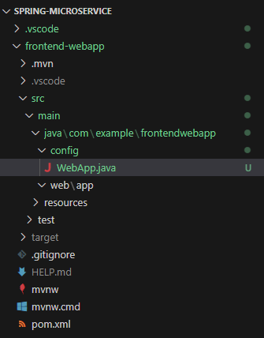

SpringBootでマイクロサービス
以下を参考に、マイクロサービスを作成する。
1. Spring Initializr
動作環境
Java: 17
SpringBoot: 3.2.0
dependencies
spring-boot-starter-security
spring-boot-starter-thymeleaf
spring-boot-starter-web
2. ディレクトリ構成変更
configディレクトリを作成し、起動クラスと設定クラスをまとめて格納する。設定クラスが散らばることがないので良い。
なお、設定クラスは@Configurationアノテーションを付与することで、設定クラスとして読み込まれる。

3. SecurityConfig.java作成
SpringSecurity設定クラスを作成する。
1. login.htmlを作成
resources/templates/login.htmlにログインページを作成
<!DOCTYPE html>
<html xmlns:th="http://www.thymeleaf.org">
<head>
<title>ログインページ | 課題管理アプリケーション</title>
</head>
<body>
<h1>課題管理アプリケーション</h1>
<div th:if="${param.error}">
<p>ユーザー名もしくはパスワードが違います</p>
</div>
<form action="#" th:action="@{/login}" method="post">
<div>
<label for="usernameInput" class="form-label">ユーザ名</label>
<input type="text" id="usernameInput" name="username" class="form-control">
</div>
<div>
<label for="passwordInput" class="form-label">パスワード</label>
<input type="password" id="passwordInput" name="password" class="form-control">
</div>
<div>
<button type="submit" class="btn btn-primary">ログイン</button>
</div>
</form>
</body>
</html>
<html xmlns:th="http://www.thymeleaf.org">：Thymeleafを有効化する記述<form action="#" th:action="@{/login}" method="post">：form内のsubmitボタンを押下した時のactionとmethodを定義。"#"はThymeleafによる書き換え対象で、書き換える内容はthで始まる箇所で、/loginというURLパス(@はThymeleafのリンク記法)にpostメソッドを飛ばす。name="username"とname="password"はIDとPW情報をサーバに送信するときに、フィールド名を指定している。ここではSpringBootのデフォルト値、usernameとpasswordを利用している。なお、変更も可能でSecurityConfig.javaで以下のように指定することで変更可能。
http
.formLogin((form) -> form // 認証方式はformログイン
.usernameParameter("USERNAME") // デフォルト値`username`から変更
.passwordParameter("USER_PW") // デフォルト値`password`から変更
.loginPage("/login") // 認証ページは"/login"
.permitAll()
)
<div th:if="${param.error}">：ログインに失敗すると、SpringBootのデフォルトではURLパラメータに/login?errorがつくため、Tymeleafの条件分岐機能を利用して、パラメータにerrorがあった場合は「ユーザー名もしくはパスワードが違います」といったメッセージを表示させる。
2. SecurityConfig.javaを作成
package com.example.frontendwebapp.config;
import org.springframework.context.annotation.Bean;
import org.springframework.context.annotation.Configuration;
import org.springframework.security.config.annotation.web.builders.HttpSecurity;
import org.springframework.security.config.annotation.web.configuration.EnableWebSecurity;
import org.springframework.security.web.SecurityFilterChain;
@Configuration
@EnableWebSecurity
public class SecurityConfig {
@Bean // 戻り値がBeanに登録される。BeanとはDIコンテナに登録されるオブジェクトのこと。結果として任意の場所でAutowiredできる。
protected SecurityFilterChain configure(HttpSecurity http) throws Exception {
http
.authorizeHttpRequests((requests) -> requests
.requestMatchers("/login/*").permitAll() // "/login"は認証不要
.anyRequest().authenticated() // その他のリクエストは認証が必要
)
.formLogin((form) -> form // 認証方式はformログイン
.loginPage("/login") // 認証ページは"/login"
.permitAll()
)
.logout((logout) -> logout.permitAll()); // ログアウト機能を有効化し、すべてのユーザがログアウト可能
return http.build();
}
// @Bean
// public PasswordEncoder passwordEncoder() {
// return new Pbkdf2PasswordEncoder();
// }
// userDetailsServiceやpasswordEncoderについてはAutowiredできるものがあれば、自動でAutowiredして利用してくれるので不要。
// userDetailsServiceはCustomUserDetailsServiceの中で@ServiceアノテーションをつけてServiceとしてDIコンテナに登録しているので、Springは勝手に読み取って使ってくれる
// passwordEncoderについても同様に、PasswordEncoderConfigの中で@BeanをつけてDIコンテナに登録しているので、Pbkdf2PasswordEncoderを自動で使ってくれる
}